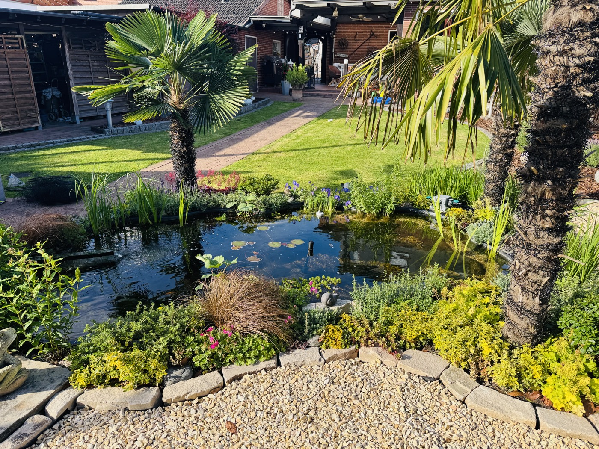
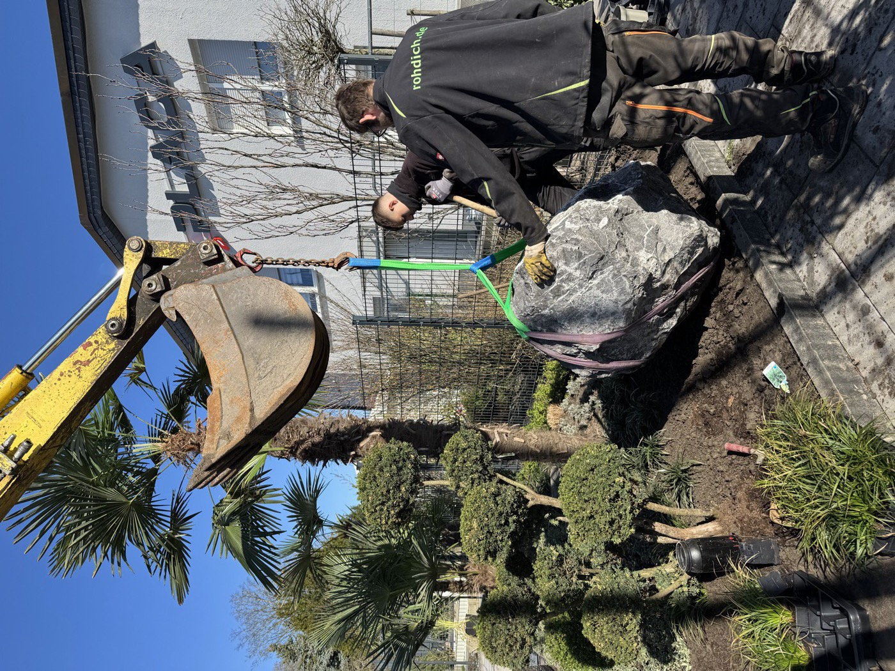

Gartengestaltung
Komplette Neu- und Umgestaltung: Wege, Beete, Rasen, Beleuchtung – geplant für Ihr Grundstück und Ihren Pflegeaufwand.
Vom Vorgarten bis zur kompletten Gartengestaltung mit Teichanlage: Maik Rohdich plant realistisch, baut handwerklich sauber und sagt Ihnen ehrlich, was auf Ihrem Grundstück sinnvoll ist – und was nicht.
Ziehen Sie den Regler nach links und rechts und vergleichen Sie den Zustand vor und nach unserer Arbeit – echte Projekte aus Herne, Bochum und Umgebung.


Ihr Garten könnte das nächste Nachher sein: Jetzt unverbindlichen Vor-Ort-Termin anfragen.
Von der ersten Idee bis zur laufenden Pflege: Diese Leistungen setzen wir für private Gärten in Herne, Bochum, Castrop-Rauxel, Recklinghausen und Gelsenkirchen-Buer um.
Komplette Neu- und Umgestaltung: Wege, Beete, Rasen, Beleuchtung – geplant für Ihr Grundstück und Ihren Pflegeaufwand.
Repräsentative, pflegeleichte Vorgärten mit Naturstein und strukturierter Bepflanzung – der erste Eindruck Ihres Hauses.
Wasser im Garten: Teichbau mit natürlicher Uferzone, Technik und Bepflanzung – vom Zierteich bis zur großen Anlage.
Fachgerechter Schnitt, Fällung und Baumkontrolle durch den Sachverständigen – sicher und dokumentiert.
Grüne Dächer für Garage, Carport oder Anbau – gut fürs Klima, die Dämmung und die Optik.
Regelmäßige Pflege, Hecken- und Gehölzschnitt, Saisonvorbereitung – damit Ihr Garten dauerhaft gepflegt bleibt.
Mediterranes Flair, das den Ruhrgebiets-Winter übersteht – Auswahl, Pflanzung und Winterschutz vom Fachmann.
Gestaltung rund um Pool und Whirlpool: Sichtschutz, Beläge, Bepflanzung – Ihre private Wellnesszone.
Kein kompliziertes Verfahren, kein Vertriebsdruck: So läuft Ihre Anfrage bei uns ab – Schritt für Schritt.
Kurz beschreiben, was Sie vorhaben – per Formular, Telefon oder WhatsApp. Fotos helfen bei der ersten Einschätzung.
Wir kommen zu Ihnen, sehen uns Grundstück und Gegebenheiten an und beraten ehrlich, was sinnvoll ist.
Sie bekommen ein nachvollziehbares Angebot mit realistischem Zeitrahmen – ohne versteckte Posten.
Unser Team setzt termintreu um. Am Ende steht Ihr neuer Garten – und auf Wunsch die laufende Pflege.
„Mega Arbeit, tolles Team! Hatte schon 3-4 Firmen, aber hier wird gehalten, was gesagt wird. Top."
„Unseren Vorgarten neu gestaltet: super Ideen, Top-Ausführung, 100% Termintreue. Absolut zufrieden und weiter zu empfehlen!"
„Bereits zum zweiten Mal die Einfahrt von Unkraut und Moos reinigen lassen. Schnell und professionell, das Ergebnis kann sich sehen lassen. Super Arbeit!"
Echte Arbeiten, echte Orte – drei Beispiele aus privaten Gärten im Ruhrgebiet.
Vorgarten-Neugestaltung mit Naturstein, strukturierter Bepflanzung und integrierter Beleuchtung.
Teichbau mit natürlicher Uferzone, Sitzplatz und passender Bepflanzung rund um den Whirlpool.
Mediterran bepflanzte Teichanlage mit winterfesten Palmen, Uferzone und Natursteineinfassung.
Kurz und ehrlich beantwortet. Für alles andere reicht eine Nachricht per WhatsApp – wir melden uns zeitnah.
Das hängt von Größe, Zustand und Wünschen ab – seriös lässt sich das erst nach einem Vor-Ort-Termin sagen. Wir nennen Ihnen dann eine realistische Einschätzung inklusive Pflegeaufwand, bevor Sie sich entscheiden.
Anfrage per Formular, Telefon oder WhatsApp senden – wir melden uns, vereinbaren einen Vor-Ort-Termin und Sie erhalten anschließend ein nachvollziehbares Angebot.
Ein Vorgarten ist oft in wenigen Tagen fertig, eine komplette Gartengestaltung mit Teich dauert je nach Umfang mehrere Wochen. Den konkreten Zeitrahmen nennen wir im Angebot – und halten ihn.
Ja. Viele Kunden lassen ihren Garten nach der Gestaltung dauerhaft von uns pflegen – von regelmäßigem Schnitt bis zur Saisonvorbereitung.
Ja. Gerade Vorgärten und kleinere Flächen gehören zu unseren häufigsten Privatkunden-Projekten. Kein Projekt ist zu klein für eine ehrliche Beratung.
Ja, das ist eine unserer Spezialitäten: winterharte Palmen und mediterrane Bepflanzung, die im Ruhrgebiet dauerhaft funktioniert – inklusive Beratung zum Winterschutz.
Ja, sehr gerne. Fotos und eine kurze Beschreibung helfen uns bei der ersten Einschätzung. Senden Sie sie an 0171 / 234 56 78.
Schwerpunkt sind Herne, Bochum, Castrop-Rauxel, Recklinghausen und Gelsenkirchen-Buer. Bei passenden Projekten kommen wir auch darüber hinaus.
Beschreiben Sie kurz Ihr Vorhaben – wir melden uns zeitnah und vereinbaren einen unverbindlichen Vor-Ort-Termin. Fotos per WhatsApp beschleunigen die Einschätzung.
Hinweis: Besuche am Betriebsgelände und am Beispielgarten sind ausschließlich nach vorheriger Vereinbarung möglich.